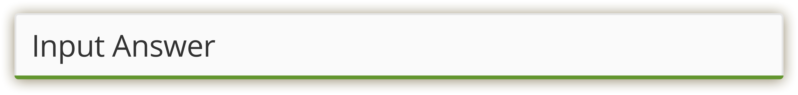
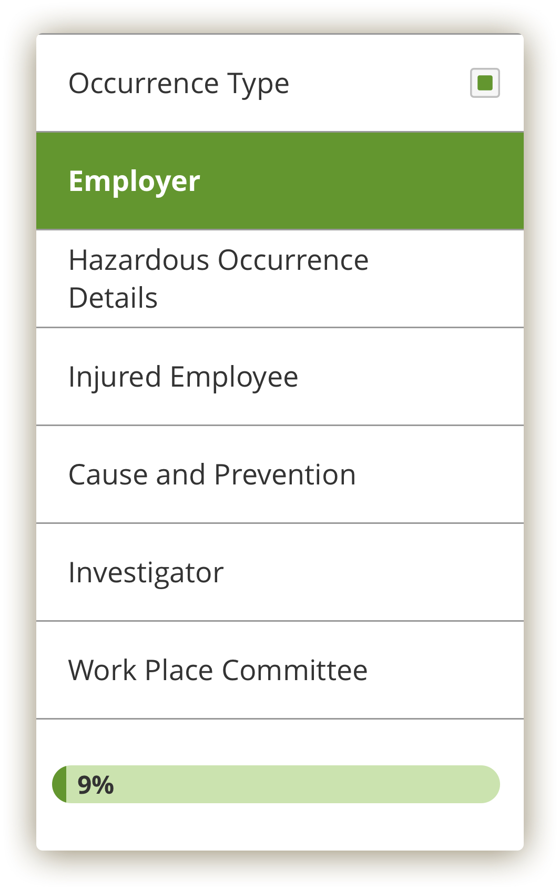
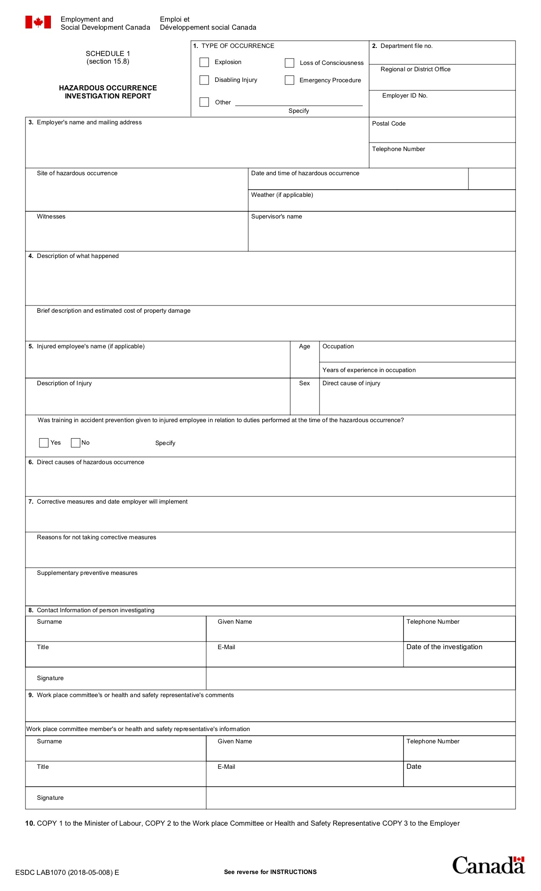

The content of the Hazardous Occurrence Investigation Report (HOIR) is from the Department of Employment and Social Development Canada (ESDC). The design of the form is inspired by the input field from the Morneau Shepell design system, and features shades of Morneau Shepell's green branding color.
View My Prototype
UI Design Decisions
-
Modern design centered around the input field from the Morneau Shepell design system.

-
A sticky sidebar which offers a shortcut to each section of the form and a progress bar.

-
Categories are grouped together opposed to the original form for easy navigation and a cleaner, more organised design.
